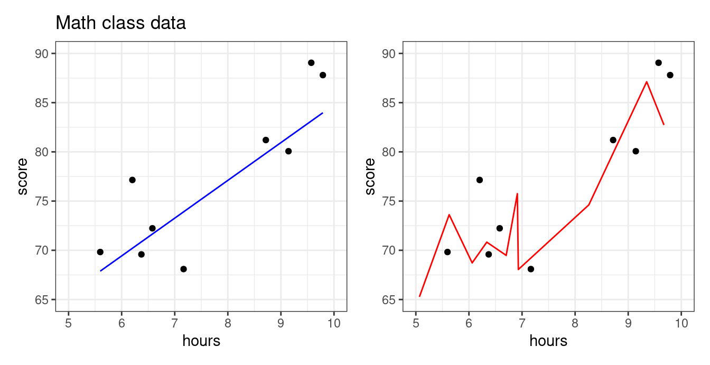
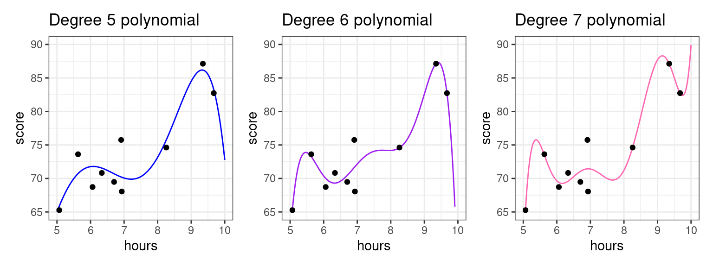
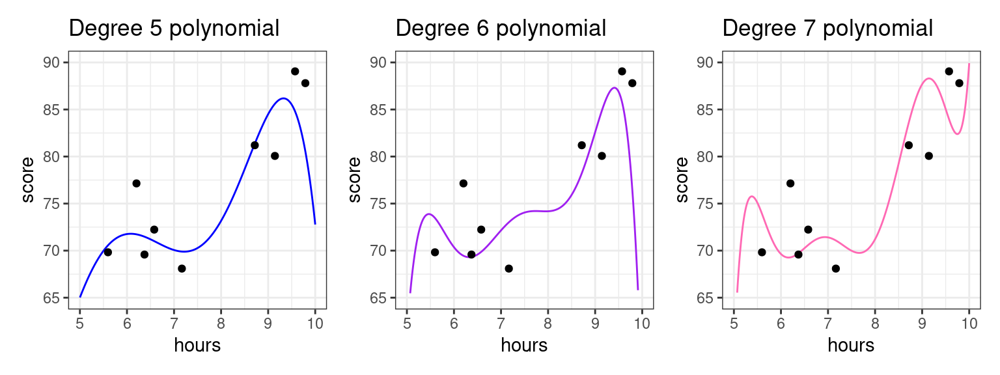
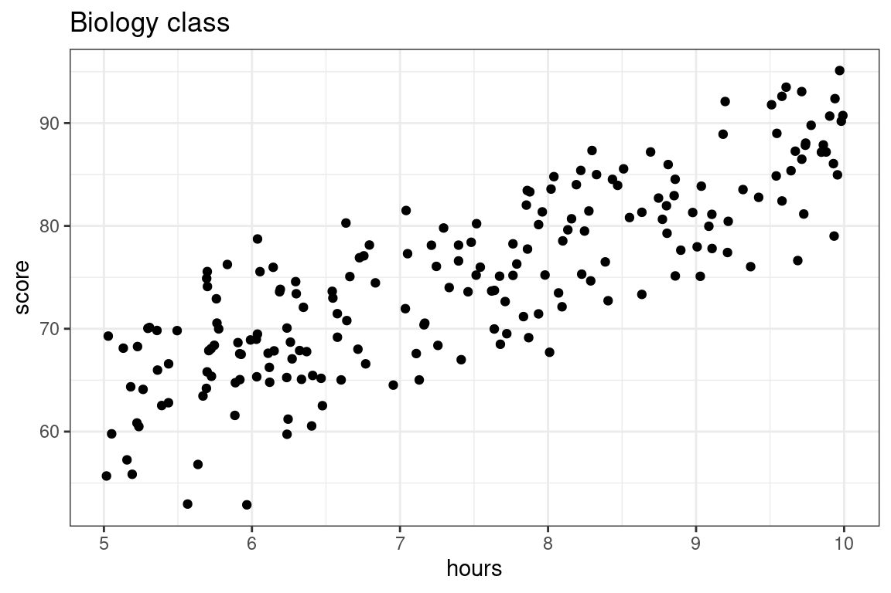

Overfitting
Training sets and testing sets
Below is data we collected about the association between number of hours studied and students’ test scores in a math class. Our goal is to predict the exam score from number of hours studied. Both plots below show the same data, but show the predictions from two different predictive models.
Which model looks more appropriate: the blue, or the red? More specifically,
Does it make sense that there should be a big difference between studying 6.7 hours vs studying 6.8 hours?
Should studying a little more make your score go down?
The blue model seems more reasonable: studying more should steadily increase your score. The predictive model on the right seems like it took the particular data points “too seriously!” This will be an issue if a new set of students from the same class comes along and we want to predict what their exam scores will be based on the amount of hours studied. Let’s use the blue and red models to predict scores from more students from this same class.

We see that the blue line is prepared to predict the exam scores well enough for these students–even though the model was not fit using them! The red model, however, does poorly. It is so beholden to the first group of students that it doesn’t know how to manage when the students are even slightly different. In statistics, we say that the red model was overfit.
- Overfitting
- The practice of using a predictive model which is very effective at explaining the data used to fit it, but is poor at making predictions on new data.
Overfitting with polynomials
Usually, overfitting occurs as a result of applying a model that is too complex, like the red one we saw for the math class data above. We created that overfitted predictive model on the right by fitting a polynomial with a high degree. Polynomials are quite powerful models and are capable of creating very complex predictive functions. The higher the polynomial degree, the more complex function it can create.
Let’s illustrate by fitting polynomial models with progressively higher degrees to the data set above.

The higher the polynomial degree, the closer the prediction function comes to perfectly fitting the data1. Therefore, when it comes to evaluating which model is the best for prediction, we would say the degree seven polynomial is best. Indeed, based on our knowledge so far, it would have the highest \(R^2\). The true test is yet to come, though. Let’s measure these three models on how well they predict to the second group of students that weren’t used to fit the model.

As we increase the degree, the polynomial begins to perform worse on this new data as it bends to conform to the original data. For example, we see that for the student having studied around five and a half hours, the fifth degree polynomial does well, but the seven degree polynomial does horribly! To put a cherry on top, the red model we showed you in the beginnng of these notes was a twenty degree polynomial!
What we see is that the higher the degree, the more risk we run of using a model that overfits.
Training and testing sets: a workflow to curb overfitting
What you should have taken away so far is the following: we should not fit the model (set the \(b_0, b_1\) coefficients) and evaluate the model (judge its predictive power) with the same data set!
We can further back up this idea quantitatively. The plot below shows the \(R^2\) value for math class models fit with different polynomial degrees.
The \(R^2\) value goes steadily upwards as the polynomial degree goes up. In fact this is mathematically guaranteed to happen: for a fixed data set the \(R^2\) value for a polynomial model with higher degree will always be higher than a polynomial model with lower degree.
This should be disconcerting, especially since we earlier saw that the model with the highest \(R^2\) did the worst on our unseen data. What you might also notice is that the \(R^2\) isn’t increasing by that much between degrees as the degree gets higher. This suggests that adding that additional degree isn’t improving our general predictive power much; it’s just helping the model tailor itself to the specific data we have.
Does that mean \(R^2\) is not a good metric to evaluate our model? Not necessarily. We can just change our workflow slightly. Instead of thinking in terms of a single data set, we can partition, or split the observations of the data set into two separate sets. We can use one of these data sets to fit the model, and the other to evaluate it.
- Training Set
- The set of observations used to fit a predictive model; i.e. estimate the model coefficients.
- Testing Set
- The set of observations used to assess the accuracy of a predictive model. This set is disjoint from the training set.
The partition of a data frame into training and testing sets is illustrated by the diagram below.
| y | x1 | x2 | x3 |
|---|---|---|---|
The original data frame consists of 10 observations. For each observation we have recorded a response variable, \(y\), and three predictors, \(x_1, x_2\), and \(x_3\). If we do an 80-20 split, then 8 of the rows will randomly be assigned to the training set (in blue). The 2 remaining rows (rows 2 and 6) are assigned to the testing set (in gold).
So to recap, our new workflow for predictive modeling involves:
- Splitting the data into a training and a testing set
- Fitting the model to the training set
- Evaluating the model using the testing set
More on splitting the data
As in the diagram above, a standard partition is to dedicate 80% of the observations to the training set and the remainder to the testing set (a 80-20 split), though this is not a rule which is set in stone. The other question is how best to assign the observations to the two sets. In general, it is best to do this randomly to avoid one set that is categorically different than the other.
Mean square error: another metric for evaluation
While \(R^2\) is the most immediate metric to evaluate the predictive quality of a linear regression, it is quite specific to linear modeling. Therefore, data scientists have come up with another, more general metric called mean square error (MSE). Let \(y_i\) be observations of the response variable in the testing set, and \(\hat{y}_i\) be your model’s predictions for those observations. Then \(\text{MSE}\) is given by
\[ \text{MSE} = \frac{1}{n}\sum_{i=1}^n(y_i-\hat{y_i})^2\] You may notice that for a linear regression model, \(\text{MSE} = \frac{1}{n}\text{RSS}\).
A common offshoot is root mean square error (\(\text{RMSE}\)), which you can obtain by taking the square root of \(\text{MSE}\). Much like what standard deviation does for variance, \(\text{RMSE}\) allows you to think above the average error on a regular scale rather than on a squared scale.
The Ideas in Code
Let’s shift the subject to mathematics to biology, and illustrate the training and testing approaching to evaluating predictions for the exam scores from a biology class with 200 students using as a predictor the number of hours that they have studied. Let’s visualize these data first.

Here we are going to compare two models: a simple linear model versus a 5th degree polynomial, both fit using the method of least squares.
- \(\textbf{Model 1:} \quad \widehat{score} = b_0 + b_1 \times hours\)
- \(\textbf{Model 2:} \quad \widehat{score} = b_0 + b_1 \times hours + b_2 \times hours^2 + b_3 \times hours^3 + b_4 \times hours^4 + b_5 \times hours^5\)
Step 1: Split data
We’ll use an 80-20 split, with each observation assigned to its set randomly. There are many ways to do this via code: here is one using functions we’ve seen.
- Generate a vector of \(n\) observations (in this case, our data has 200 observations) in which approximately 80 percent of the observations are
"train"and 20 percent of the observations are"test". To do this, we can make use of thesample()function.
set.seed(20)
train_or_test <- sample(x = c("train", "test"),
size = 200,
replace = TRUE,
prob = c(0.8, 0.2))- mutate this vector onto our data frame (our data frame here is called
biology). Below, you can see which rows in the data frame have been assigned to"train"and which have been assigned to"test".
biology <- biology |>
mutate(set_type = train_or_test)# A tibble: 6 × 3
hours score set_type
<dbl> <dbl> <chr>
1 6.30 74.6 test
2 6.30 73.4 train
3 7.40 76.6 train
4 9.97 95.1 test
5 9.58 82.4 train
6 8.19 84.0 train - split the data based on whether the observations are in the
"train"or"test"set.
biology_train <- biology |>
filter(set_type == "train")
biology_test <- biology |>
filter(set_type == "test")Step 2: Fit the model to the training set
Now fit two models on the training data. We will be using lm(), and for both models, the data argument is given by biology_train.
lm_slr <- lm(score ~ hours, data = biology_train)
lm_poly <- lm(score ~ poly(hours, degree = 20, raw = T),
data = biology_train)We can evaluate the \(R^2\)’s for both models’ performance on the training data just like before with glance(). Which model do you expect to have a better training set \(R^2\) value?
library(broom)
glance(lm_slr) %>%
select(r.squared)# A tibble: 1 × 1
r.squared
<dbl>
1 0.693glance(lm_poly) %>%
select(r.squared)# A tibble: 1 × 1
r.squared
<dbl>
1 0.715Just as we might have guessed from looking at the model fits, the polynomial model has a better \(R^2\) value when evaluated on the training set.
Step 3: Evaluate the model on the testing set.
The real test of predictive power between the two models comes now, when we will make exam score predictions using the testing set: data which the model was not used to fit and hasn’t seen.
We will still be using the predict() function for this purpose. Now, we can just plug biology_test into the newdata argument!
score_pred_linear <- predict(lm_slr, newdata = biology_test)
score_pred_poly <- predict(lm_poly, newdata = biology_test)Once these predictions \(\hat{y}_i\) are made, we then can use dplyr code to:
- mutate on the predictions to our testing data
- set up the \(R^2\) formula and calculate2. In the code below, we are using the formula
\[R^2 = 1-\frac{\text{RSS}}{\text{TSS}} = 1-\frac{\sum_{i=1}^n(y_i-\hat{y_i})^2}{\sum_{i=1}^n(y_i-\bar{y})^2}\]
- We can also calculate \(\text{MSE}\) and \(\text{RMSE}\) as \(\frac{1}{n}\text{RSS}\) and \(\frac{1}{n}\sqrt{\text{RSS}}\), respectively.
biology_test %>%
mutate(score_pred_linear = score_pred_linear,
score_pred_poly = score_pred_poly,
resid_sq_linear = (score - score_pred_linear)^2,
resid_sq_poly = (score - score_pred_poly)^2) %>%
summarize(TSS = sum((score - mean(score))^2),
RSS_linear = sum(resid_sq_linear),
RSS_poly = sum(resid_sq_poly),
n = n()) %>%
mutate(Rsq_linear = 1 - RSS_linear/TSS,
Rsq_poly = 1 - RSS_poly/TSS,
MSE_linear = RSS_linear/n,
MSE_poly = RSS_poly/n,
RMSE_linear = sqrt(MSE_linear),
RMSE_poly = sqrt(MSE_poly)) |>
select(Rsq_linear, Rsq_poly, MSE_linear, MSE_poly)# A tibble: 1 × 4
Rsq_linear Rsq_poly MSE_linear MSE_poly
<dbl> <dbl> <dbl> <dbl>
1 0.664 0.629 26.6 29.3Voila the linear model’s test set \(R^2\) is better than the polynomial model’s test \(R^2\)! We also see the \(\text{MSE}\) for the linear model is lower than that for the polynomial model.
So which is the better predictive model: Model 1 or Model 2? In terms of training, Model 2 came out of top, but Model 1 won out in testing.
Again, while training \(R^2\) can tell us how well a predictive model explains the structure in the data set upon which it was trained, it is deceptive to use as a metric of true predictive accuracy. The task of prediction is fundamentally one applied to unseen data, so testing \(R^2\) is the appropriate metric. Model 1, the simpler model, is the better predictive model. After all, the data we are using looks much better modeled by a line than a five degree polynomial.
Summary
This lecture is about overfitting: what happens when your model takes the particular data set it was built on too seriously. The more complex a model is, the more prone to overfitting it is. Polynomial models are able to create very complex functions thus high-degree polynomial models can easily overfit. Fitting a model and evaluating it on the same data set can be problematic; if the model is overfitted the evaluation metric (e.g. \(R^2\)) might be very good, but the model might be lousy on predictions on new data.
A better way to approach predictive modeling is to fit the model to a training set then evaluate it with a separate testing set.
Footnotes
We say a function that perfectly predicts each data point interpolates the data. See the first red curve for the math class exams.↩︎
Because \(\hat{y}_i\) involve information from the training data and \(y_i\) and \(\bar{y}\) come from the testing data, the decomposition of the sum of squares does not work. So, we cannot interpret testing \(R^2\) as we would training \(R^2\), and you may have a testing \(R^2\) less than 0. However, higher \(R^2\) values still signal that the model has good predictive power.↩︎